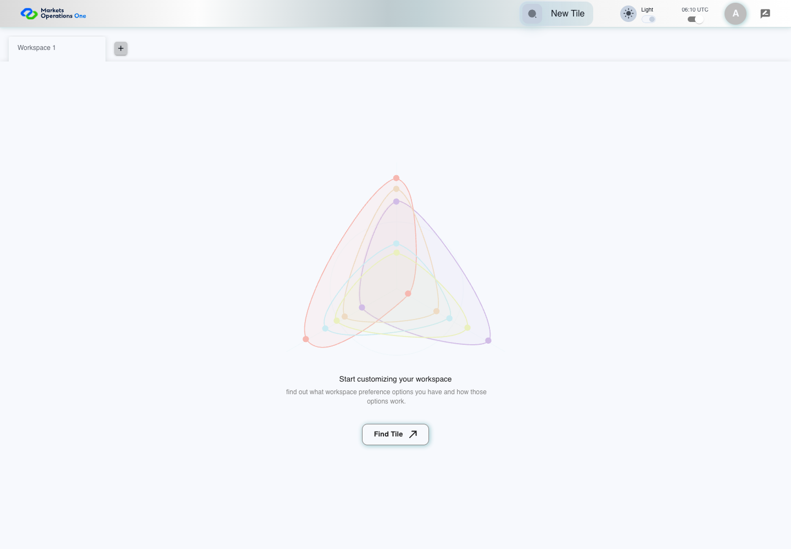

UI-PREF-002 theme selection and persistence
PASS · application/run-050/ui-pref-002-theme-selection-and-persistence-9ccbe02b7f30-attempt-1 · ACTUAL_APPLICATION_LOCAL_SERVICES
Actual current React with controlled login/validation/activity renewal and seeded empty workspace. Preference storage is real browser storage. Clock cases use Playwright clock.
2026-10-22T06:10:41.642Z to 2026-10-22T06:10:44.597Z
Assertions and result · Artifact manifest · Exact run inputs and source hashes
Result SHA-256:74bfd289e792164ce5405411e426e0cacb4c997facd2f0c32b48cea4f6cfbbedScreenshot capture: CAPTURED. Named frames: 6.
Step screenshot bindings: COMPLETE. 5/5 canonical steps have execution screenshots.
Bindings measure structural coverage only. They do not establish screenshot content quality or relevance.
Screenshot content review: NOT_REVIEWED. Recorded context: 0/6 frames. Identical image bytes: 2 repeated frames. Recorded context does not establish human visual review.
Canonical step timeline
Given User A is authenticated as fixture UI-USER-01 with the case-specific permissions
Execution: PASSED.
1. step-01 Visible state after step 1: Given User A is authenticated as fixture UI-USER-01 with the case-specific permissions
2026-10-22T06:10:42.726Z · 1440×1000
Step: /Users/lushevol/code/github/ratan-release-impact/workbench/tasks/ui-test-coverage-20261022/test-cases.md:7402
SHA-256:cbae80fd2866edae96e1dd63a09397ba5762ab8a471e802cbb366337c399a488And light theme was selected and fixture storage is retained
Execution: PASSED.
2. step-02 Visible state after step 2: And light theme was selected and fixture storage is retained
2026-10-22T06:10:42.983Z · 1440×1000
Step: /Users/lushevol/code/github/ratan-release-impact/workbench/tasks/ui-test-coverage-20261022/test-cases.md:7403
SHA-256:6c96b723b9196aaeb2242556c9711bb109227f4704815c946869b7fc73391ec2When User A reloads the shell browser page
Execution: PASSED.
3. step-03 Visible state after step 3: When User A reloads the shell browser page
2026-10-22T06:10:44.127Z · 1440×1000
Step: /Users/lushevol/code/github/ratan-release-impact/workbench/tasks/ui-test-coverage-20261022/test-cases.md:7404
SHA-256:a7f219c3aad7075fbaf22582ac97d1245f8769dd58affd53997bd9df35572819Then switch named "Theme Switch" inside the shell application bar is checked
Execution: PASSED.
4. step-04 Visible state after step 4: Then switch named "Theme Switch" inside the shell application bar is checked
2026-10-22T06:10:44.178Z · 1440×1000
Step: /Users/lushevol/code/github/ratan-release-impact/workbench/tasks/ui-test-coverage-20261022/test-cases.md:7405
SHA-256:a7f219c3aad7075fbaf22582ac97d1245f8769dd58affd53997bd9df35572819Image bytes match frame 3. An unchanged image can be valid for consecutive assertions. This match does not establish correct step content.
And text with text "light" inside the Theme Switch section in the shell application bar is visible
Execution: PASSED.5. step-05 Visible state after step 5: And text with text "light" inside the Theme Switch section in the shell application bar is visible
2026-10-22T06:10:44.231Z · 1440×1000
Step: /Users/lushevol/code/github/ratan-release-impact/workbench/tasks/ui-test-coverage-20261022/test-cases.md:7406
SHA-256:a7f219c3aad7075fbaf22582ac97d1245f8769dd58affd53997bd9df35572819Image bytes match frame 4. An unchanged image can be valid for consecutive assertions. This match does not establish correct step content.
Additional named frames

The final visible state after the named test assertions.
2026-10-22T06:10:44.314Z · 1440×1000Step: Test source: /Users/lushevol/code/github/ratan-release-impact/workbench/e2e/audit-specs/preferences.spec.ts:10
SHA-256:
c87837baaea72ba5553f6c042e21487ff0df0b3b0b464e246bf87fde0a2cee61Screenshots establish visible state only. Assertions and traces support functional claims.